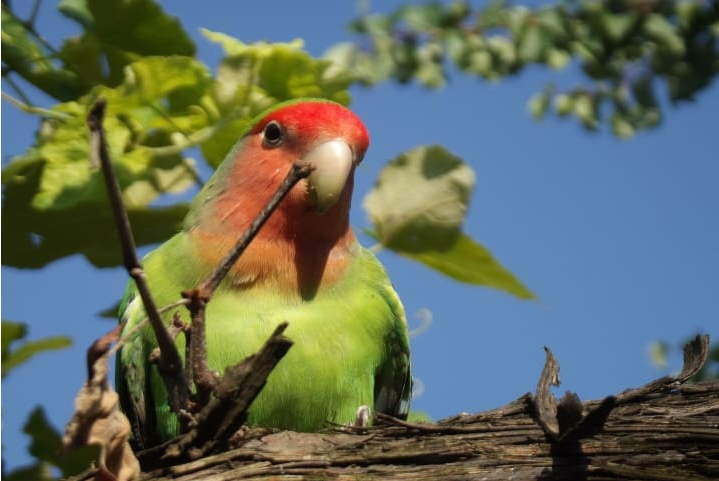
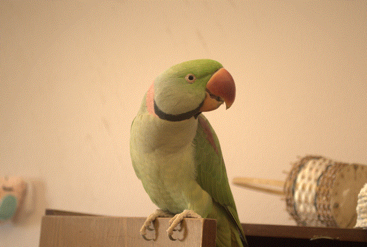
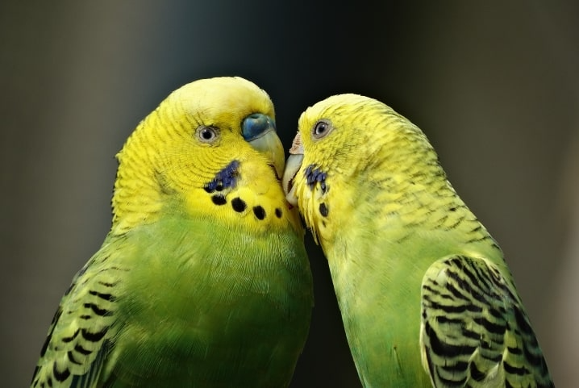
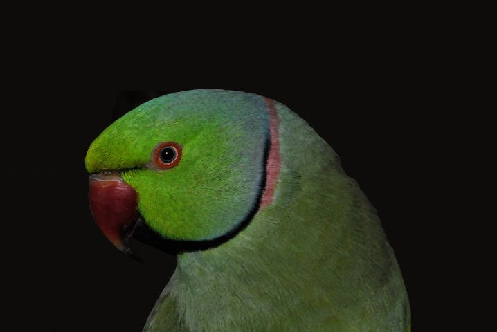
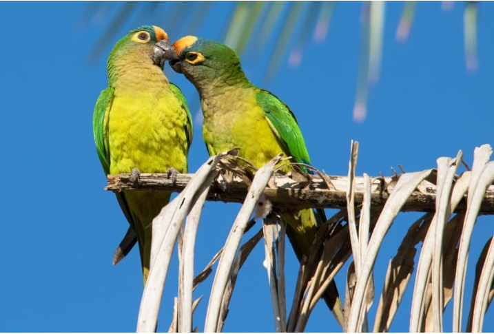

Periquito Agarponis

Também conhecido como pássaro do amor ou periquito-namorado, o agapornis é uma ave originária da África e que tem uma característica muito fofa: monogâmico, ele elege um parceiro e passa a vida toda com ele.
Por isso mesmo, a regra é adquirir sempre o casal.São diversas espécies do gênero agapornis, sendo que, no Brasil, a mais comum é o periquito Agapornis roseicollis, que se destaca por seu corpo verde com mancha alaranjada no rosto.
Quando adultos, medem cerca 17 cm e podem viver por, em média, 12 anos.
Periquito Alexandrino

Frequentemente confundido com o periquito-de-colar, o periquito-alexandrino também possui uma faixinha em volta do pescoço. Contudo, ele é maior e mais encorpado, podendo chegar a impressionantes 60 cm de comprimento.
Dizem que seu nome tem origem no fato de Alexandre, o Grande, ter sido a primeira pessoa a levá-lo da Ásia para a Europa. É uma ave muito ativa e que, se bem cuidada e em cativeiro, tem estimativa de vida de até 40 anos.
Sua coloração normal é verde com tons um pouco mais claros na região do abdômen. São sociáveis, inteligentes e podem chegar aos 30 anos.
Periquito Australiano

Uma das mais populares espécies de periquito para criação doméstica, é o periquito australiano. Pode ser encontrado em diversas cores, incluindo verde, azul, amarelo, cinza e até albino.
Bastante sociável, prefere viver em casal, em grupos e até com outros tipos de ave. Atinge, em média, 18 cm, com peso de até 40 gramas e sua estimativa de vida é de até 14 anos.
Periquito de Colar

Ainda maior que o periquito-rei, podendo alcançar 40 cm quando adulto, o periquito-de-colar chama atenção por seu tamanho e por um detalhe curioso: eles possuem uma faixinha bem marcada em volta do pescoço, daí estarem “de colar”.
Periquito Rei

Com cerca de 27 cm, o periquito-rei é maior que seus companheiros psitacídeos periquito-australiano e agapornis. Além disso, ele possui uma cabeça mais arredondada, o que acabou lhe rendendo os nomes populares de cabecinha-de-coco, coquinho-de-ouro e periquito-cabeça-de-coco.
As cores dessa espécie podem ser periquito verde, azul, amarelo e laranja. Além disso, pode ser criado em casa e sua estimativa de vida é de até 30 anos.